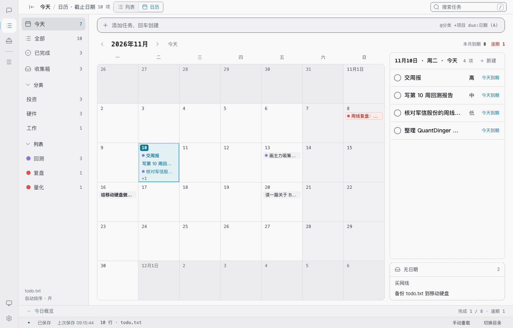
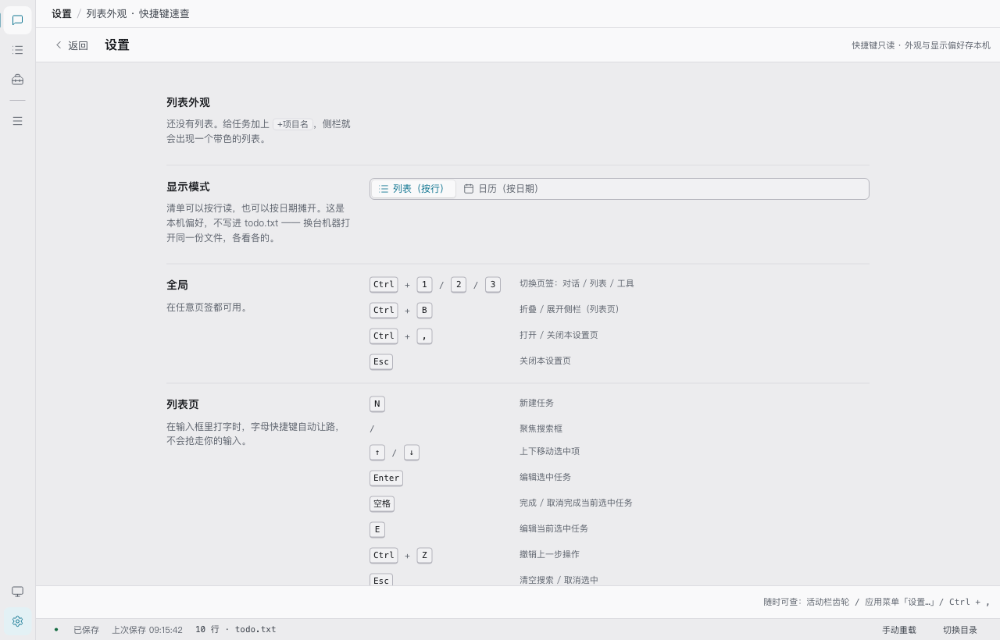
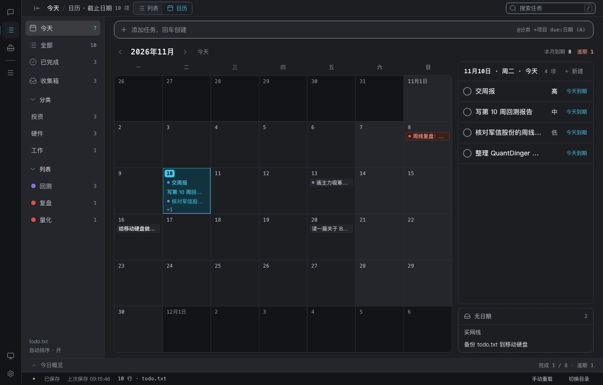
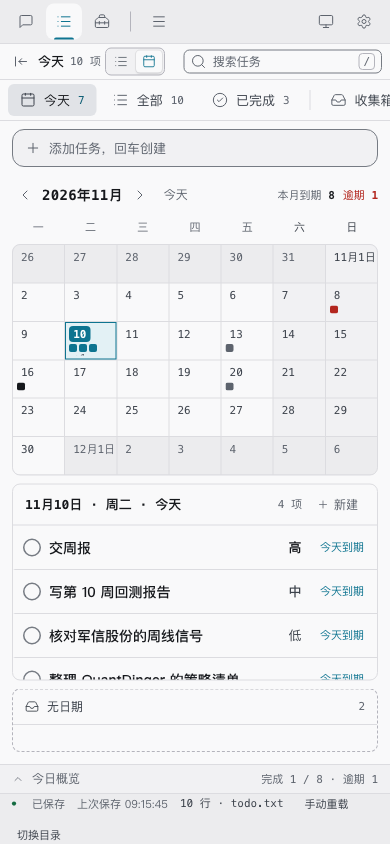

日历视图 · 补齐与交付说明
11-08 落地的「日历」是清单的第二种显示模式，核心逻辑与接线当时已经完整，但入口、门禁、测试与文档都还缺一截。本轮把这些补齐，不动已有的设计取舍。数据面零改动：todo.txt / done.txt / notes.md 的格式一个字节没动。
- 状态
- 未提交 · 未发版
- 基线
- v1.3.0 + 11-07 UI 重做
- 用例
- 37 文件 / 708 条
- 门禁
- 22 + 74 + 38 档，全绿
不是第四个页签，是同一个列表的另一种排布
页签（对话 / 列表 / 工具）管「做什么」，侧栏视图管「看哪一批」，显示模式管「怎么排」。日历与列表共用侧栏过滤、搜索、store 动作和快速添加，只是把按行排换成按日期摊开 —— 所以它挂在列表页里，不占页签、不另造数据源。
configStore 的一个独立键 worktodolist.list-mode.v1；不写进 todo.txt、不进数据目录、不进 git。换台机器打开同一份文件，各看各的。
投影层的三条既有语义（本轮沿用，未改）
- 选中日是唯一真相，显示月份恒由它派生；翻月带着选中日一起走，「选中日不在显示月内」从结构上不可能发生。月网格固定 42 格，翻月时视线不跳。
- 「今天」视图在日历里放宽为全部未完成：列表里的 today 是紧急度过滤（
due <= 今天），但日历天生是提前看未来的镜头，照搬会把未来全清空。t:阈值同理不参与。 - 「已完成」按完成日期锚定、整体只读：不能拖、不能建、没有托盘，看的是「每天做完了什么」。
拖任务 chip 改期刻意不借用 store.dragId —— 那是列表手动排序的信号，借了会被 TaskRow 的落点逻辑误认成重排。日历的拖拽状态留在组件内。
交互契约
| 入口 | 行为 |
|---|---|
| 顶栏分段开关 | 列表 / 日历两档，aria-pressed 标当前档；三处入口读同一份配置，切一处另两处跟着变。 |
| 应用菜单 | 「显示模式」分组，两项都会先切回列表页再改模式。 |
| 设置页 | 本轮新增 「显示模式」一节 + 「日历」快捷键速查组；页头仍注明快捷键只读、偏好存本机。 |
| 鼠标 | 单击日期 = 选中，日详情跟着走；双击空白日期 / 点「新建」/ Enter = 在这天新建（预填 due:，仍走原 addTask）；拖 chip 到别的日期 = 改期，拖进「无日期」托盘 = 清日期。 |
| 键盘（焦点在格子上） | ← → ±1 天、↑ ↓ ±1 周（在日详情里改为上下移行）、PageUp / PageDown 翻月、Home 回今天、空格 选中、N / Enter 在这天新建。 |
| 只读态 | 已完成视图显示「只读」，收掉托盘、新建按钮与所有可拖条目；Enter 被吃掉但不产生写入。 |
chip 与 +N 是格子里的鼠标摘要，不进 Tab 序列 —— 日期格子本身可聚焦，选中后日详情里的 TaskRow 可聚焦，键盘用户在那儿完成编辑 / 勾选 / 删除，路径不缺。托盘例外：无日期任务不在日详情里，本轮给它补了键盘入口（见 04）。
动手前先确认已有的没坏
11-08 那批改动没有留下验证记录，所以先跑了一遍全套：36 文件 / 694 用例、静态门禁（CSS 类名 / 96 组对比度 / Hook 规则）、三个浏览器门禁（设置 15、工具 74、响应式 38 档 539 项）全部通过。也就是说本轮是在一条绿基线上补缺口，不是在救火。
本轮补了什么
| 缺口 | 处理 | 文件 |
|---|---|---|
| 设置页入口 | 新增「显示模式」分组（复用顶栏同一套 mode-switch 控件与 configStore），速查表新增「日历」六条键；页头说明同步为「快捷键只读 · 外观与显示偏好存本机」。 | SettingsPage.jsx |
| 门禁零覆盖 | qa-settings 分组清单由四节改六节，新增 7 条断言：真实访问 ?view=calendar / calendar-done，验 42 格、选中态、月导航 / 日详情 / 托盘、模式开关按下态、只读态收掉编辑入口、无横向溢出。 | qa-settings.mjs |
| 无效菜单项 | 日历恒按日期分组、组内 compareAuto，排序模式对它没有作用对象 —— 日历下收起主区右键里的两项排序，列表里照旧。 | App.jsx |
| 键盘可达性 | 托盘条目补 role="button" / tabIndex / aria-label，Enter 与空格等价于鼠标单击打开编辑；同步补一条渲染断言。 | CalendarView.jsxCalendarView.test.jsx |
| 交互层零单测 | 把键位映射与拖放结果抽成两个纯函数 calendarKeyAction / dropReschedule，组件只负责分派；不必引入 DOM 依赖就能钉死「←→ 跨月进位」「同日松手零写入」这类语义。新增 6 条用例。 | lib/calendar.jslib/calendar.test.js |
| 模式存储无测试 | 导出 normalizeListMode / saveListMode，补 7 条契约测试：值域只有两个、脏值静默回落、落盘后读点立刻跟着变、localStorage 不可用时不抛异常。 | lib/listMode.jslib/listMode.test.js |
| 类名 / 色彩门禁 | qa-css-check 的运行时清单补齐 overdue / now（此前删掉逾期 chip 样式门禁不会红）；qa-contrast 补 4 组日历专属搭配 + 2 条装饰描边参考值，共 104 组。 | qa-css-check.mjsqa-contrast.mjs |
| 文档与截图 | 本说明页 + 4 张抹掉样式指南外壳的真实界面截图；README 功能清单补一条。 | docs/design/…README.md |
刻意没动的地方
审查里还列出几处「看起来不一致」，但它们是 11-08 写在注释里的设计取舍，改了反而会破坏口径，因此只在这里写清楚，不在这轮动：
- 同一视图两种「N 项」：列表页眉数的是
displayOrder，日历数的是projection.tasks；today 视图在日历里被放宽，两个数字天然不同。日历内部另有「本月到期 / 全库逾期 / 当日 N 项」三个读数，各自服务不同的问题，不合并。 - 逾期是全库口径：翻到任何一个月都该看到欠账总数，欠账不会因为翻月消失。今日概览另有一套取数，两者并存。
- Esc 不回今天：它只清搜索 / 取消选中，日历选中日是导航状态不是临时选中，按 Esc 把人弹回本月会很突兀。
- 应用菜单的排序分组仍在：那是全局排序设置，改了会带回列表；主区右键那两项才是「就在日历里点、却没有任何作用」。
- 浏览器门禁仍不在 CI：CI 只跑
test:guard / test:nl / test:ui。本轮补的日历断言进了test:settings，本地与 macOS 上可复现（见 07）；要不要把浏览器门禁接进 CI 是另一件事，涉及 runner 上装 Edge/Chrome，另行决定。
全绿
| 门禁 | 结果 |
|---|---|
npm test | 37 文件 / 708 用例 全过（新增 14 条：模式存储 7、键位与改期 6、托盘键盘 1） |
test:ui | 类名契约无缺失 / 运行时拼接值无缺失 / 无裸色值与裸字号；对比度 104 组 0 失败；Hook 规则 41 文件通过 |
test:guard | 磁盘 37 个测试文件全部真的跑到 |
test:nl | 44/44 + 174 触发词词表一致 |
test:settings | 22/22（原 15，新增 7 条日历 / 模式断言） |
test:tools | 74/74 |
test:responsive | 38 档 / 539 项，失败 0（含 8 个日历档位） |
npm run build | 通过，333.14 kB JS（gzip 114.92 kB） |
macOS 上复现浏览器门禁
cd todolist-gui npm run dev # Vite 监听 [::1]:15181 env -u HTTP_PROXY -u HTTPS_PROXY -u http_proxy -u https_proxy \ EDGE=/tmp/unslop/chrome-qa SG_BASE=http://localhost:15181 \ npm run test:settings # 同理 test:tools / test:responsive npm run test:settings:shots # 附送 4 张干净界面截图
/tmp/unslop/chrome-qa 是给本机 Chrome 补 --no-sandbox 的 sh 包装；截 localhost 必须去掉代理变量，否则请求会被代理吃掉。
补齐后的真实界面
全部由 styleguide.html?view=… 渲染真实组件 + 演示数据，截图前抹掉 .sg-nav、清零 .sg-stage padding；日期相对真实今天生成。




M / ??），没有 commit、没有 tag、没有 Release。CHANGELOG 最新条目仍是 v1.3.0；等决定发版时再补版本条目，并同步 package.json / tauri.conf.json / Cargo.toml 三处版本号。
另有一处可以继续做的空白：CalendarStage 的拖放改期、双击新建目前只有手工演示，没有浏览器级自动化交互断言；本轮把键位与改期语义抽成纯函数并单测覆盖，但 DOM 事件链路仍未自动化。若以后要加，沿用 qa-settings.mjs 的 CDP 骨架即可，不必引入新依赖。